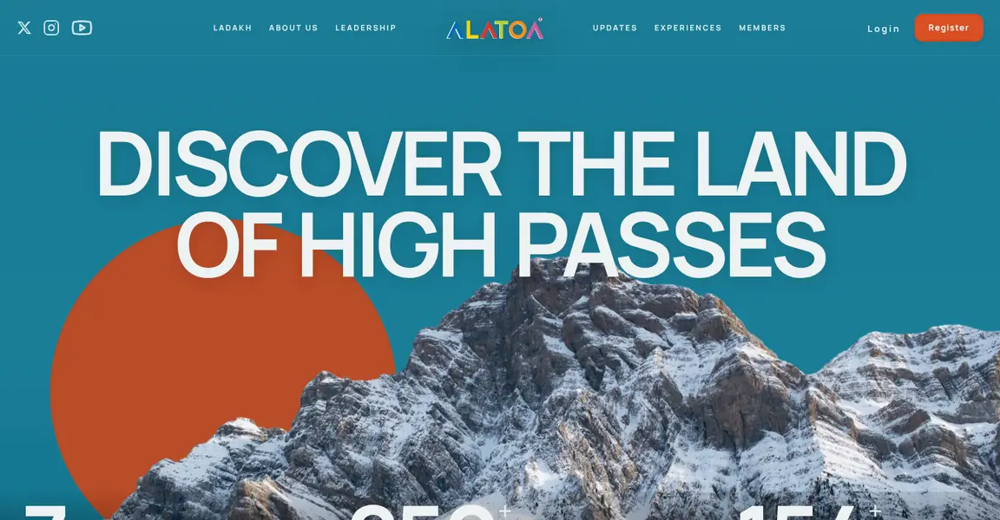

Built for the terrain. Ready for what’s next.
In the mountains, survival is about more than strength. It takes patience, precision, adaptability and resilience. The snow leopard embodies these qualities. They also shape how we think, build and innovate.